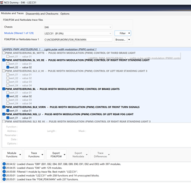

Frankie Deleon
IS-4543-ON1
Milestone 2- Coding with NCS Expert
Idea #2: Recode BMW car data to enable/disable different features. It can also expand further to create an environment for engine tuning.
Milestone #2: Enable/Disable factory Options as needed for educational/recreational purposes.
Summary of Activities:
In our previous milestone, we created an environment for tuning and diagnostics by installing essential tools such as INPA, NCSExpert, Ms4xFlasher, and TunerPro. Now, we will delve into BMW coding using NCSExpert, a straightforward program that enables reading, writing, and modifying configuration files in the vehicle’s electronic control unit (ECU) and its various modules. When you read an ECU using NCSExpert, it extracts a configuration file called FSW_PSW.TRC, a trace file that contains the current coding settings for each scanned module. Examples of these modules include KOMBI (Instrument Cluster), CAS (Car Access System), and MRS (Multiple Restraint System), among others.
These modules can be accessed through NCSExpert, which outputs the trace file used to modify vehicle functions. For instance, you can add a digital speedometer to your instrument cluster, enable an upgraded comfort access system on a base model, or remove airbag settings in a racecar that no longer requires specific airbags. All these modifications are legitimate uses of NCSExpert. The only drawback is that the information read from a BMW’s ECU is written in German. Thus, prior knowledge of the specific parameters or the use of another tool, such as NCS Dummy, is helpful.
Once the preferred settings have been changed in the module's code, you will save the file and overwrite the .trc file into an FSW_PSW.MAN file, which will then be exported back to NCSExpert for coding the vehicle. While these programs are normally used for recreational purposes, such as enabling features in your vehicle, there are concerns related to criminals using these modules to steal cars from dealerships. Once a criminal has access to a vehicle they are targeting, all they need to do is get a complete scan of the vehicles ECU, then come back with a coded key specific to the vehicle’s vin-number and steal the vehicle. This is becoming a serious concern in the car industry with new software being released completely streamlining this process using tools that can be purchased on amazon to efficiently clone keys to specific vin-numbers. This issue highlights the growing cybersecurity risks in modern vehicles, particularly as more software-based systems are implemented. It underscores the importance of securing access to diagnostic ports and ensuring that the software tools used for vehicle maintenance and coding are properly safeguarded while still allowing public use.
Description of Learning Completed:
· Open NCS Expert tool located in the BMW standard tools suite installed and configured in the previous milestones.
· Load the preconfigured profile to make coding easier by simplifying the coding process.
o File > load profile > Revtor’s NCS Expert Profile
· Start (F1)- Make sure K-DCAN cable discussed in previous milestone is plugged into the vehicle and computer and set ignition in car to position 2 right before actually turning on the vehicle to begin reading the ECU.
· Select Chassis (F3) > Select vehicle, for this example I am using a 2002 e46 BMW 330i.
· Select ECU- for this example we will be enabling the European standard Hazard lights. These lights give a slightly cooler aesthetic with a faster tick speed within the hazard lights. This process is apart of the ALSZ module of the e46 MS43 ECU.
· Back (F6)
· Process ECU > Select ECU Module
By default, it will read all the ECU modules, which is not ideal. We will select the correct module housing the code we wish to manipulate.
· Change the job to Reading coding data (CODIERDATEN_LESEN) in german, this process extracts the current coding data associated with the selected ECU and stores the information in the trace file for editing.
· Select Execute job.
·
Directory Search
· Navigate to WORK folder in C: drive, C:\NCSEXPER\WORK to locate the trace file which we will be editing its code.
·

· Open FSW_PSW.TRC and locate the lines of code you wish to manipulate. (open trace file to edit and man file to write to ecu)
· Use CTRL+F to find option to code.
· Change option from enabled (aktiv) to not enabled (nicht_aktiv) or vice-versa as needed. To enable euro hazard lights the command BLINKIMPULS_WARNBLK needs to be set to wer_04, where it was originally set to 02.
Since the codes are in German, there are many conversion charts online that show the meaning to each code and how to manipulate them.
· File > Save as >Save as type: All files > Overwrite .MAN file.
Once all the coding options have been configured to your liking, we then save the updated .TRC file and overwrite it as the FSW_PSW.MAN file
To confirm the file is correct, you will see the .MAN file date modified section has been updated.
NCSDummy option
· This same process can be enumerated in English using NCSDummy where you do not need to source an external conversion table since the language is converted using the NCSDummy application.
· Similar to NCSExpert, Select Chassis. In this case I am using an e46.
· Select trace file- Browse> Select FSW_FSW.TRC Trace File located at C:\NCSEXPER\WORK

· Select Module, in this case since we already scanned the module using NCSExpert, we can select filter by current trace file
· Locate coding options wanting to edit, you can scroll and view or filter by the name “hazard” or “blinkimpuls” for the German name.
· Simply enable options wanted.
In this case we set Hazard lights flashing to value 4.
· Export FSW/PSW > Export FSW_PSW.MAN
Back to NCS Expert.
· Change Job to coding in NCS. (SG_CODIEREN).
· Execute job (F3).
· Once “coding ended” is shown job is complete and the vehicles settings have been updated via coding, you can take the key out of the ignition then reinsert the key to restart the ecu.
Here is a YouTube video of before and after the hazard lights coding using NCSExpert.
BMW Tuning Video Tutorial
While this was just a simple example of coding a single vehicle option, coding with NCSExpert provides a powerful tool for customizing and fine-tuning your BMW’s settings to match your preferences. This method of coding can be used to manipulate nearly any vehicle option you can think of in your car. However, understanding how to manipulate a vehicle’s ECU opens a concerning vulnerability—criminals today are exploiting these systems in alarming ways. They can walk into car dealerships unnoticed, in the middle of the night or even during broad daylight, and scan vehicles that are often left unlocked for customers to view or even breaking in and quickly gaining access. By gaining access to the ECU and collecting the VIN number, criminals can clone keys using various software and return later to steal the vehicles at their convenience.
In some cases, poor security practices have allowed criminals to steal brand new cars from dealerships in under two minutes. This highlights a significant gap in the automotive industry's security posture, revealing that there is substantial room for improvement. Strengthening the protection of ECU data and securing access to vehicles, both physically and digitally, is crucial to prevent this form of high-tech car theft while still allowing for public access and routine maintenance. Implementing robust encryption, better key management systems, and secure access protocols will help strike a balance between security and usability, ensuring that vehicles remain both functional for repairs and protected considering the software and hardware widely available throughout the internet to streamline key cloning.
References
Scribd. (n.d.). E46 NCS coding list fsw - PSW. Scribd. https://www.scribd.com/doc/300308710/e46-Ncs-Coding-List-FSW-PSW
Admin. (2023, March 29). Expert.com. NCS. https://ncs-expert.com/